-

Project 04: Machine Language
Project 05: Computer Architecture
Todo este proyecto se se realizó en base a nand2teris
Puedes descargar la carpeta con los resultados finales de esta parte del proyecto 04_05 dando click aquí.
PROJECT_04
MULT
Código con el que se solucionó el ejercicio
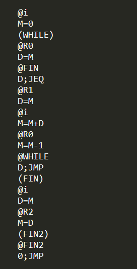En el MULT lo que se hace es que se permite que se pueda detectar el teclado.
FILL
Código con el que se solucionó el ejercicio
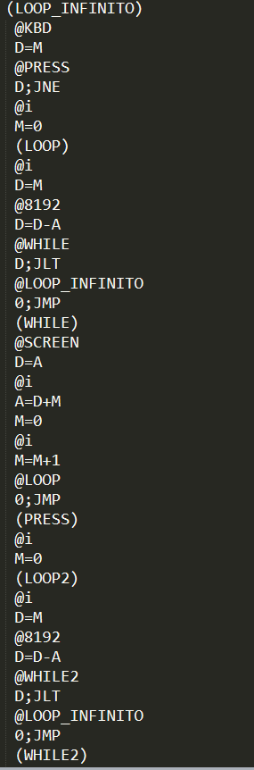 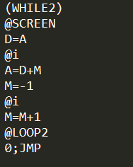En el FILL lo que se hace es que se ejecutan una serie de instrucciones, un loop infinito en el que siempre se está preguntando si el KBD está presionado o no se ejecutan dos condiciones, una encargada de colocar los pixeles de la pantalla en negro y la otra de borrarlos.
PROJECT_05
MEMORY
Gráfico con el que se solucionó el ejercicio
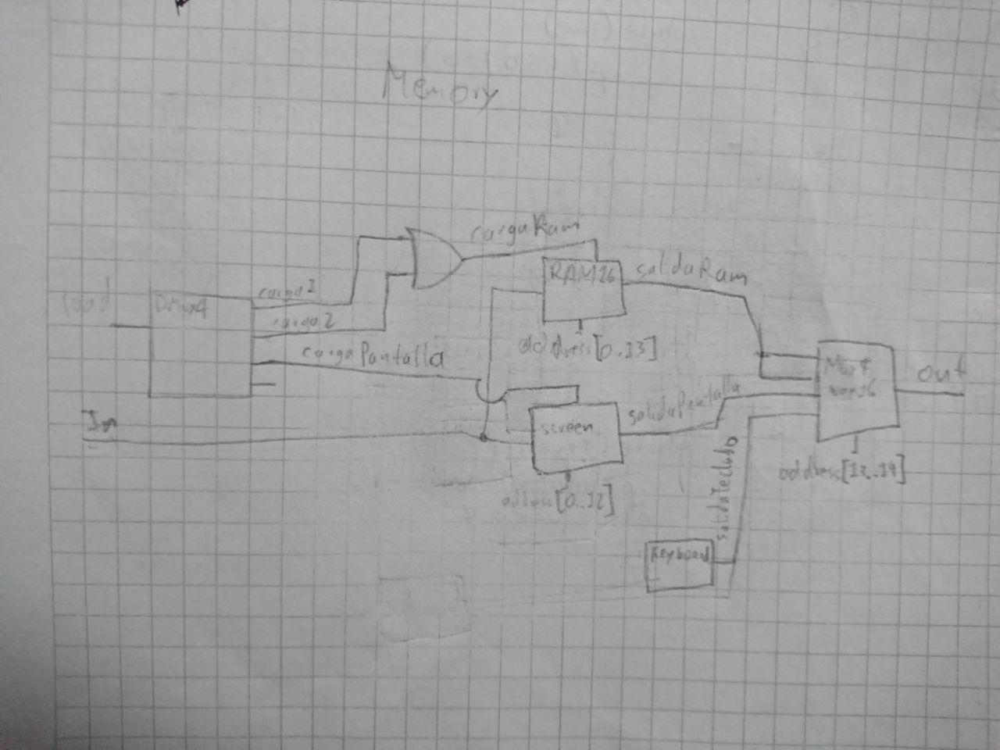Código con el que se solucionó el ejercicio
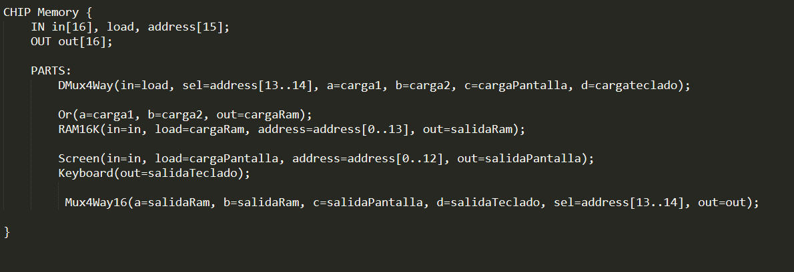CPU
Gráfico con el que se solucionó el ejercicio
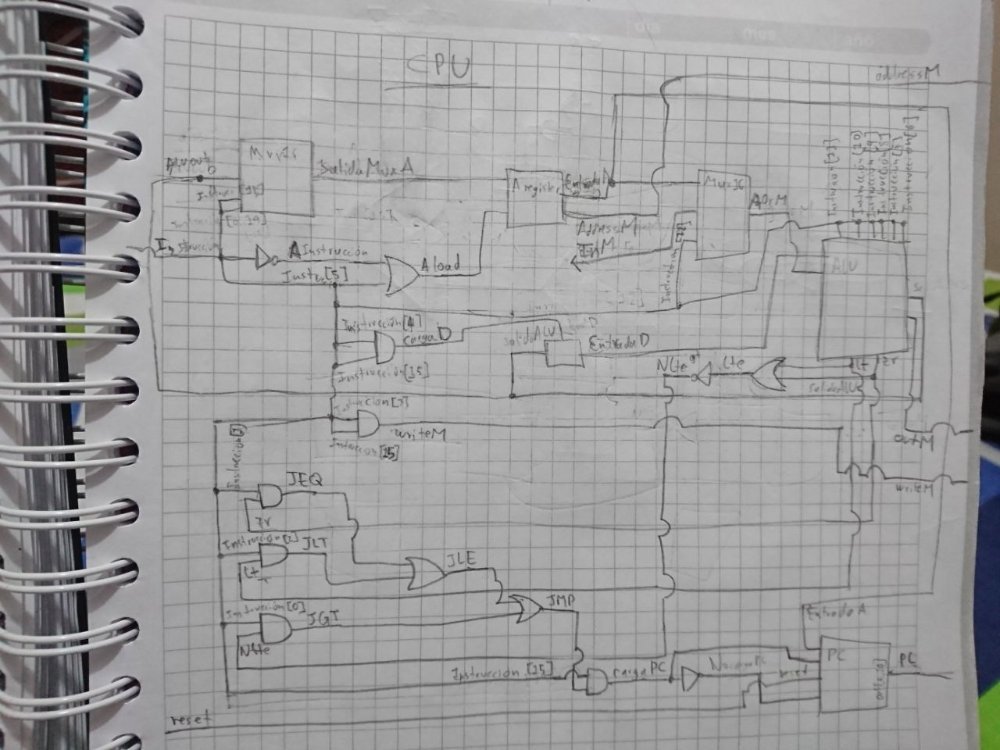Código con el que se solucionó el ejercicio
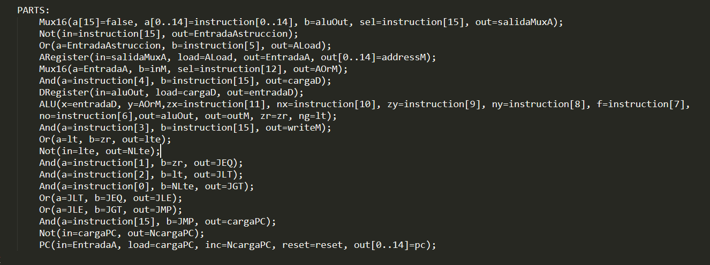COMPUTER
Gráfico con el que se solucionó el ejercicio
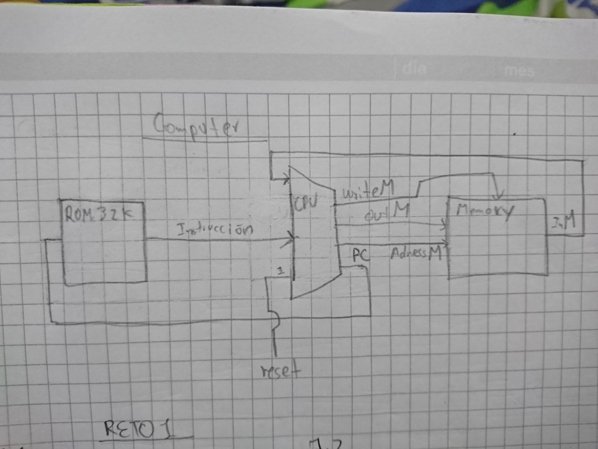Código con el que se solucionó el ejercicio
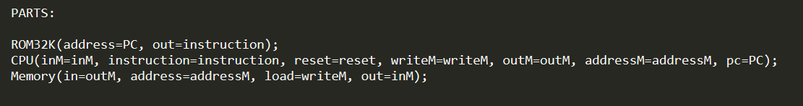RETO1
Considere el diagrama correspondiente al computador implementado en el curso y el código mostrado. El computador arranca con reset = 1 y luego reset = 0.
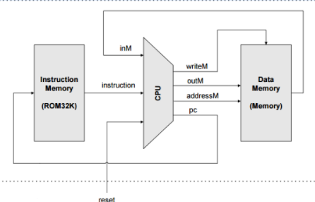
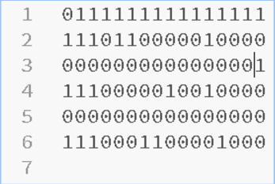1.1. Escriba el código ensamblador y en alto nivel (puede utilizar C, C++, java, C#, python) correspondientes al código de máquina de la figura anterior.

1.2 Este punto se ve solucionado en la imagen anterior.
1.3 Lo que hace el programa es que almacena en la primer posición de memoria el valor 32767 + 1
1.4 El resultado del programa en realidad no es el esperado, debido a que con esas órdenes lo que se espera es que se guarde en la primera posición de la RAM un 32768, pero esto no va a pasar, debido a que si miramos ese valor nos correspondería a un -32768 debido al complemento a dos.
RETO2
considere el iguiente diagrama:
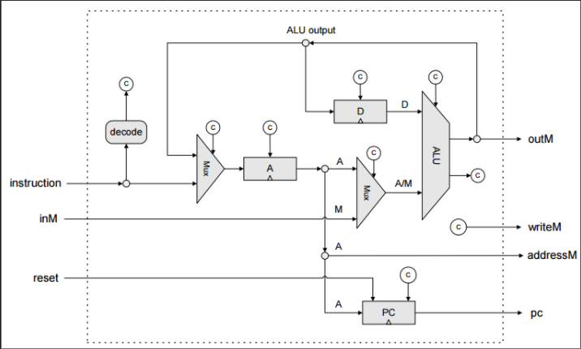2.1. Complete el circuito del tal manera que pueda implementar el set de instrucciones del computador Hack visto en clase.

2.2. Considere que la implementación de la CPU tiene un error. Dicho error ocurre al ejecutar la instrucción 0000 0011 0000 0110 que está almacenada en la posición de memoria 16. Luego de ejecutar la instrucción el programa continúa en la posición de memoria 32. Indique qué valores podrían tener los registros A, D y PC justo antes y justo después de ejecutar la instrucción.
Como el Pc carga la posición número 16 y cuando ejecuta esta instrucción salta a la posición 32 podríamos afirmar que el PC está leyendo la instrucción tipo A (ya que la instrucción que está entrando comienza con ceros) como si la instrucción fuera una de tipo C. Entonces el error está en que no verifica correctamente cual es el tipo de instrucción. Fijándonos más detalladamente, si interpretáramos la instrucción como tipo C nos daríamos cuenta de que la posición C5, C4, J1 y J2 son las que se encuentran con el bit en 1 por lo tanto esto nos generaría la instrucción tipo C D; JLE. Por lo tanto, podemos apreciar que D está cargado con un valor menor o igual a 0. Por lo que se ejecuta el salto.
Antes de generarse la instrucción A = 32, PC =16 y D <= 0. Después de generarse la instrucción A = 774 y PC = 32 D <=0
Puedes descargar la lista de chequeo dando click aquí.
Puedes descargar la AutoEvaluación dando click aquí.
{kind=link}
{kind=link}
{kind=link}
{kind=link}
{kind=link}